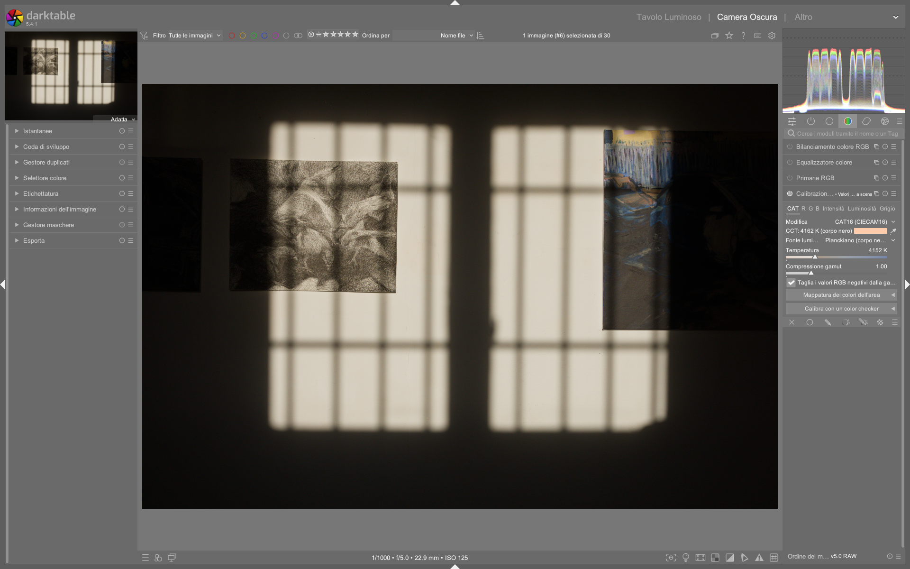

Color Calibration¶
Il modulo Color Calibration esegue l'adattamento cromatico usando il modello CAT16 (Chromatic Adaptation Transform). È il sostituto moderno del bilanciamento del bianco tradizionale, progettato per operare in uno spazio scene-referred, dopo l’applicazione del profilo colore di input e prima della mappatura tonale finale1.
Approccio a due stadi¶
| Stadio | Modulo | Funzione |
|---|---|---|
| 1 | White Balance | Lasciare su Camera Reference — corregge solo la dominante verde Bayer e rende più accurato il demosaic2 |
| 2 | Color Calibration (tab CAT) | Adattamento cromatico percettivo reale, basato sul modello CAT16 e sull’illuminante effettivo della scena1 |
Color calibration provides a more accurate white balance than the legacy white balance module using the CAT16 chromatic adaptation transform from the CIE.1
Questo flusso è fondamentale: il modulo White Balance opera prima del profilo colore di input e serve esclusivamente a stabilizzare il processo di demosaic; Color Calibration, invece, agisce dopo il profilo e calcola un adattamento fisicamente coerente con le proprietà dell’illuminante reale — non una semplice correzione RGB fissa1. Se si modifica manualmente i coefficienti RGB nel modulo White Balance, si invalida la predittività del CAT1.
Workflow moderno abilitato
Attivare Preferences > Processing > Auto-apply chromatic adaptation defaults > modern per applicare automaticamente White Balance (camera reference) + Color Calibration (CAT16, as shot) a ogni nuovo RAW. Questo evita errori umani e garantisce coerenza tra immagini dello stesso set1.
Input color profile: usare solo matrici standard
Il modulo Color Calibration presuppone che il modulo Input Color Profile utilizzi la matrice standard (non custom). Qualsiasi matrice personalizzata viene ignorata durante il calcolo CAT, poiché il CAT si basa su coordinate assolute CIE xyY1. Usare matrici non standard compromette l’accuratezza dell’adattamento.
Parametri principali¶
| Parametro | Descrizione | Range / Default | Note |
|---|---|---|---|
| Illuminant | Tipo di illuminante (as shot, detect surfaces, detect edges, manual) | — | Il valore predefinito è as shot in camera, ma richiede metadati EXIF completi. Per RAW senza dati EXIF (es. DNG da smartphone), usare detect from surfaces o detect from edges1. |
| Adaptation | Modello di adattamento cromatico | CAT16 (default), Linear Bradford (1985), Non-linear Bradford (1985), XYZ, none (disable) |
CAT16 è raccomandato per tutti gli scenari: evita colori immaginari anche con illuminanti estremi (LED, fluorescenza) e ha maggiore robustezza rispetto a Bradford1. XYZ è deprecato e utile solo per debug1. |
| Temperature | Temperatura colore fine-tuning | -100 a +100 (step 1 K), default 0 |
Disponibile solo per illuminanti vicini al locus Planckiano (D-daylight o black body). Non appare per custom o invalid CCT1. |
| Hue | Tinta (LCh space) per illuminante personalizzato | 0°–360°, default 0° |
Usa con estrema cautela: variazioni di ±5° già causano shift cromatici visibili. Preferire il color picker o la selezione di aree neutre2. |
| Chroma | Saturazione dell’illuminante personalizzato | 0%–100%, default 0% |
Valori >40% indicano illuminanti fortemente cromatici (es. LED rossi o blu); valori <10% suggeriscono un errore di rilevamento1. |
| R / G / B | Moltiplicatori canale per correzione manuale (tab Channel Mixer) | -1.000 a +1.000, default 0.000 |
Usati per cross-talk grading: es. R=+0.150, G=-0.050, B=0.000 aggiunge magenta ai rossi. Non modificare se non si intende fare color grading creativo1. |
Metodi di rilevamento illuminante¶
Punto di partenza consigliato. Usa i metadati EXIF della fotocamera (white balance tag, color matrix, ecc.). Richiede che la fotocamera abbia registrato correttamente il WB al momento dello scatto1.
Analizza le superfici neutre nell’immagine usando l’algoritmo gray-world with covariance filtering. Cerca aree con alta correlazione tra canali cromatici (YUV) e alta varianza intra-canale, scartando zone omogenee (es. cielo blu) o rumorose1.
✅ Ideale per scene naturali con grigi realistici (pavimenti, muri, pietre).
❌ Fallisce con superfici artificiali dipinte (es. muri gialli, erba sintetica) o immagini fortemente saturate1.
Usa l’algoritmo gray-edge basato sulla norma di Minkowski (p=8) del laplaciano. Assume che i bordi debbano avere lo stesso gradiente su tutti i canali (grigi)1.
✅ Eccellente per scene artificiali, architetture, prodotti, dove non esistono superfici neutre.
❌ Sensibile al rumore: sconsigliato per ISO >1600 o immagini con forte noise reduction applicato1.
Per illuminazione mista (finestra + incandescenza): usa istanze separate con maschere per correggere zone diverse1.
Esempio pratico:
- Prima istanza → maschera su finestra (detect from edges) → illuminante D65
- Seconda istanza → maschera su lampada da tavolo (detect from surfaces) → illuminante A (incandescent)
- Terza istanza → globale, as shot, per bilanciamento base
Tab CAT: workflow avanzato¶
Il colore dell’illuminante e il CCT¶
La color patch mostra l’illuminante calcolato proiettato nello spazio sRGB. Il suo obiettivo è diventare bianco puro dopo l’adattamento. A sinistra della patch è visualizzata la CCT (Correlated Color Temperature) approssimata, in Kelvin.
| Etichetta CCT | Significato | Azione consigliata |
|---|---|---|
4248 K (daylight) |
Illuminante molto vicino allo spettro D-daylight (±0.5%) | Usare D (daylight) come tipo di illuminante |
3200 K (black body) |
Illuminante molto vicino a un corpo nero (±0.5%) | Usare Planckian (black body) come tipo di illuminante |
5700 K (invalid) |
Illuminante troppo lontano dal locus Planckiano (es. LED, fluorescente, luce al sodio) | Usare custom e regolare hue/chroma direttamente in LCh1 |
Nota tecnica: La CCT è solo un’indicazione. Internamente, l’illuminante è sempre rappresentato in coordinate CIE xyY assolute, indipendentemente dall’etichetta. Un’etichetta
(invalid)non implica un errore: significa solo che la temperatura non è fisicamente significativa1.
Selezione dell’illuminante: cosa cambia¶
| Opzione | Quando usarla | Effetto sul flusso |
|---|---|---|
same as pipeline (D50) |
Per usare solo il Channel Mixer senza adattamento | Disabilita CAT, ma mantiene la possibilità di mascherare e miscelare canali1 |
CIE standard illuminant |
Se si conosce esattamente la sorgente luminosa (es. lampada da studio 5500K D55) | Usa valori CIE pre-calcolati: D65, D50, A, F2, F11, LED-B5, etc. Richiede un profilo input accurato1 |
custom |
Per correzioni precise o illuminanti non standard | Abilita i controlli hue/chroma in LCh e permette di salvare preset specifici per scena1 |
Tab Channel Mixer: uso avanzato¶
Oltre all’adattamento cromatico, Color Calibration funziona come un potente channel mixer:
- Grayscale output: attivare
gray+normalize channelsper una conversione in scala di grigi basata sulla luminanza (pesi R=0.2126, G=0.7152, B=0.0722) - Cross-talk grading: modificare
R/G/Bper introdurre interazioni tra canali (es.R=+0.120,G=-0.080→ magenta nei rossi) - Gamut compression: attivare
gamut compressione regolareclip negative RGB from gamutper gestire overflow cromatici in uscita1 - Black & White: combinare con
color equalizerper controllare la luminosità dei canali prima della conversione in bianco e nero5
Esempio pratico (da tutorial street photography):
Prima istanza (bilanciamento):
illuminant = as shot, adaptation = CAT16, temperature = 0
Seconda istanza (B/W conversione):
tab = gray, normalize channels = ON, R=G=B=0.000, opacity = 100%
Consigli operativi¶
Maschere locali: strategia a doppia istanza
Per correggere zone con illuminazione diversa:
1. Prima istanza → maschera su zona A (es. cielo) → detect from edges
2. Seconda istanza → maschera invertita su stessa area → detect from surfaces
Questo evita artefatti di sovrapposizione e garantisce transizioni fluide3.
Tinta (hue): mai regolarla in isolamento
Il cursore hue è estremamente sensibile: ±2° genera shift cromatici visibili. Usarlo solo dopo aver fissato chroma e illuminant. Meglio usare il color picker su una superficie neutra o creare una maschera su un oggetto grigio noto2.
Profilo input: linear rec 2020 RGB è obbligatorio per scene-referred
Mantenere linear rec 2020 RGB come profilo colore di input per garantire compatibilità con AGX, Filmic e tutti i moduli scene-referred. Profili non lineari (es. sRGB) causano clipping e perdita di precisione numerica2.
Calibrazione con color checker: workflow ottimale
- Scattare foto del chart sotto illuminazione identica alla scena
- Importare in darktable → attivare
color calibration - Nella tab CAT: selezionare
custom→ usare il color picker sul quadrato grigio centrale - Passare alla tab
Channel Mixer: cliccarecalibrate with a color checker - Salvare il preset come
MyCamera-MyLighting4
Esempio: Correzione multi-illuminante con maschera parametrica¶
Da Some Color calibration ideas (05:20–09:40)
1. Creare prima istanza di color calibration con maschera parametrica su sfondo verde (JzCzhz → H: 80–120, z: 0.02–0.15)
2. Impostare illuminant = custom, hue = 69.9°, chroma = 35.2%, adaptation = CAT16
3. Creare seconda istanza con maschera disegnata sulla coccinella, invertita rispetto alla prima
4. Nella seconda istanza, impostare illuminant = detect from edges, temperature = -12 K
5. Attivare gamut compression in entrambe le istanze con clip negative RGB from gamut = ON
6. Regolare opacity della seconda istanza a 85% per evitare over-correction del rosso6
Esempio: Conversione in bianco e nero con controllo tonale preciso¶
Da Full b&w edits in darktable for street photography (12:15–15:40)
1. Attivare prima istanza di color calibration con tab = gray, normalize channels = ON, R=G=B=0.000
2. Aggiungere seconda istanza con tab = Channel Mixer, R=+0.120, G=-0.030, B=-0.020 per accentuare il contrasto nei rossi
3. Applicare maschera tonale (L: 0.15–0.45) sulla seconda istanza per limitare l’effetto alle ombre-medie
4. Impostare blend mode = normal, opacity = 65%
5. Verificare con color assessment mode (Ctrl+B) che i grigi siano neutri prima di proseguire5
Domande frequenti¶
Problema: Il modulo non rileva correttamente l’illuminante in interni con LED bianchi freddi¶
Quando si usa detect from surfaces su illuminazione LED con CCT >6500K, il risultato è spesso CCT = 6800 K (invalid) con chroma >55%. In questi casi, detect from edges produce un illuminante più stabile (CCT ≈ 6200K, chroma ≈ 28%). Si raccomanda quindi di usare detect from edges per LED freddi e detect from surfaces per sorgenti continue come tungsteno o fluorescenza7.
Problema: Dopo aver applicato color calibration, i verdi appaiono “sbiaditi” o “giallastri”¶
Questo fenomeno è tipico quando hue è impostato sopra 75° in presenza di illuminanti con dominante verde (es. luci al sodio o LED verdi). Ridurre hue a 55–62° e aumentare leggermente chroma a 38–42% ripristina la saturazione naturale del verde senza generare artefatti. Evitare di compensare con color equalizer: la correzione deve avvenire a livello di illuminante6.
Problema: Il color picker non risponde o restituisce valori anomali¶
Il color picker richiede che il modulo input color profile sia impostato su linear rec 2020 RGB e che white balance sia su camera reference. Se si usa un profilo custom o white balance manuale, il picker restituisce valori non affidabili (es. xyY = [0.33, 0.33, 1.0] indipendentemente dalla zona selezionata). Verificare lo stato del modulo input color profile prima di usare il picker1.
Preset integrati¶
darktable 5.4 include 7 preset preconfigurati per color calibration, accessibili dal menu hamburger del modulo. I più utili per il workflow moderno sono:
| Preset | Quando usarlo | Note |
|---|---|---|
modern chromatic adaptation (CAT16) |
Workflow predefinito per nuovi RAW | Imposta illuminant = as shot, adaptation = CAT16, temperature = 0, gamut compression = OFF8 |
gray world auto |
Scene naturali con superfici neutre | Usa detect from surfaces, adaptation = CAT16, normalize channels = OFF8 |
gray edge auto |
Architettura, prodotti, scene artificiali | Usa detect from edges, adaptation = CAT16, temperature = 08 |
basic channel mixer |
Grading creativo senza CAT | Imposta illuminant = same as pipeline (D50), adaptation = CAT16, R=G=B=0.0008 |
color checker calibration |
Calibrazione con X-Rite ColorChecker | Abilita calibrate with a color checker nella tab Channel Mixer9 |
Riferimenti visuali¶

{kind=link}
Risorse¶
- PIXLS.US — Profiling a Camera with Darktable Chart
- darktable User Manual — Color Calibration
- A Dabble in Photography — Full landscape edit with AI
- A Dabble in Photography — Some Color calibration ideas
Fonti¶
-
darktable User Manual — Color Calibration, docs.darktable.org |
processed/darktable-usermanual-en/usermanual-48-en-module-reference-processing-modules-color-calibration.md↩↩↩↩↩↩↩↩↩↩↩↩↩↩↩↩↩↩↩↩↩↩↩↩↩↩ -
The darktable pipeline for beginners — A Dabble in Photography ↩↩↩↩
-
Landscape edit with AI — A Dabble in Photography ↩
-
PIXLS.US — Profiling a Camera with Darktable Chart, pixls.us |
processed/pixls-articles/articles-profiling-a-camera-with-darktable-chart.md↩ -
Full b&w edits in darktable for street photography — A Dabble in Photography ↩↩
-
Some Color calibration ideas — A Dabble in Photography, timestamp 05:20–09:40 |
processed/video-tutorials/MJJR8DJ3rr8.md↩↩ -
LED lighting and CAT16 accuracy — PIXLS.US forum, 2025-03-12 |
processed/discussion-pixls-us/24189.md↩ -
darktable User Manual — Presets, docs.darktable.org |
processed/darktable-usermanual-en/usermanual-48-en-darkroom-processing-modules-presets.md↩↩↩↩ -
darktable User Manual — Batch-editing images, docs.darktable.org |
processed/darktable-usermanual-en/usermanual-48-en-guides-tutorials-batch-editing.md↩